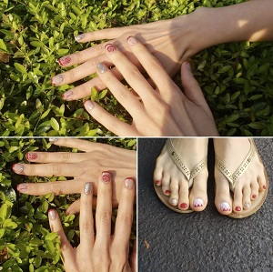
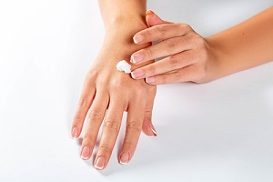
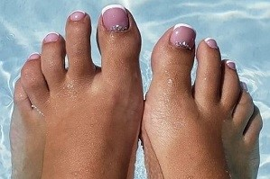
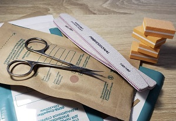
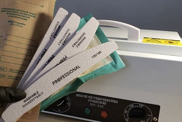

Я люблю то, что я делаю
Я с детства люблю рисовать, но я никогда не занималась этим профессионально. После рождения моей малышки, я решила реализовать себя и окончила курсы маникюра и педикюра. Сейчас мое хобби стало важной частью моей жизни. Я рада, что могу творить прекрасное и радовать этим других людей.
Взбодрись
Я уверена, что яркий и качественный маникюр может поднять настроение. Аккуратные и красивые ногти сами по себе привлекают внимание и повышают самооценку. Художественный и красочный дизайн сейчас очень популярен. Он открывает целый мир разных стилей, смелых сочетаний и миниатюрных рисунков, способных вызвать улыбку, привлечь внимание, подчеркнуть стиль и выделить обладательницу этого произведения искусства из толпы.Выбери и ты свой стиль!
Маникюр
Когда мы говорим «идеальный маникюр», мы имеем в виду, прежде всего, ухоженные руки: увлажненную кожу, аккуратную кутикулу, подходящую форму ногтей. Маникюр, кстати, многое может рассказать о характере человека.
Педикюр
Педикюр важная часть ухода за ножками, и это не просто накрасить ногти. Чтобы ваши ноги чувствовали себя комфортно и выглядели привлекательно, вам нужно регулярно ухаживать за ними. Педикюр - одна из тех процедур, которая поможет сохранить здоровье и красоту ног на долгие годы.
Дезинфекция важна, дезинфекция нужна
Итак, я здесь расскажу о том, как инструменты для ногтей, такие как ножницы, металлические лапаточки и щипчики, очищаются, моются, стерилизуются и хранятся после процедуры маникюра:
- Дезинфекция. На этом этапе инструменты погружаются в дезинфицирующий раствор. Все их поверхности, включая ручки, полностью находятся в жидкости в течение времени, указанного на этикетке производителя дезинфицирующего средства.
- ПСО (предстерилизационная обработка). Я тщательно ополаскиваю инструменты в проточной воде и очищаю с помощью щетки, тем самым смывая дезинфицирующее средство.
- Сушка. Все предметы помещаются на чистое полотенце или салфетку до полного высыхания. 
- Стерилизация. Я помещаю сухие инструменты в одноразовые крафтпакеты и отправляю в сухожаровый шкаф на 60 минут при температуре 180 градусов Цельсия.
- Хранение. Хранятся инструменты в крафтпакетах и вскрываются непосредственно перед началом работы с клиентом.
Пилочки и бафы я использую одноразовые.